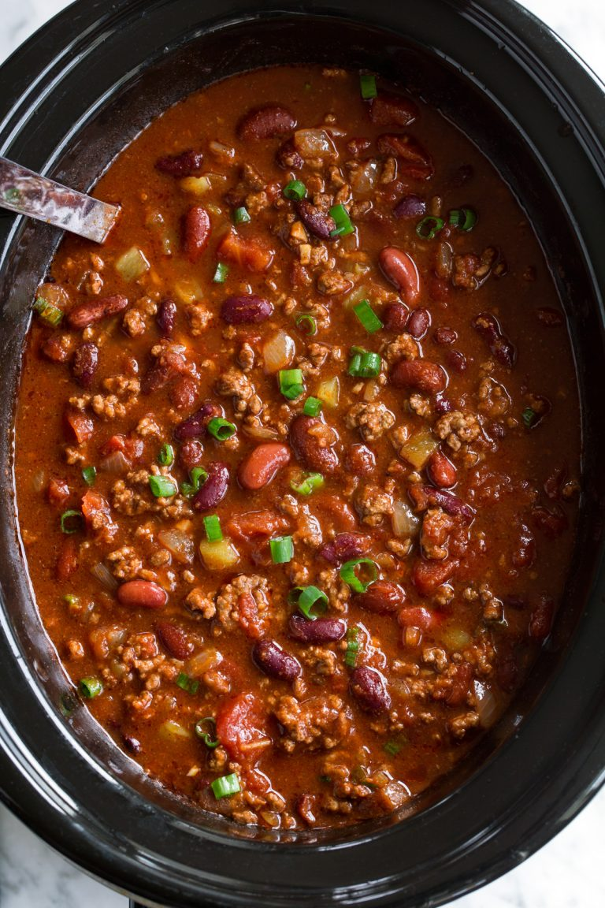

Slow Cooker Chili

Description
Easy dump and go chili for a hearty meal on a cold night. Makes enough to share with guests or to store and reheat for
easy weeknight meals
Ingredients
- 1 can Black beans
- 1 can Kidney beans
- 2 cans Diced tomatos
- 3 cans Tomato sauce
- 2 tsp Paprika
- 2 tbsp Chili powder
- 3 cloves garlic
- 1 Onion
- 2 lbs ground beef
- 1 Tbsp Olive oil
Steps
- Saute onion in olive oil until translucent. Add garlic and saute for an additional 30 seconds. Add to slow cooker pot.
- Return skillet to medium-high heat and cook beef until browned
- Drain fat from beef and add to slow cooker
- Stir in remaining ingredients
- Cover and cook on low heat for 5-6 hours
- Enjoy!